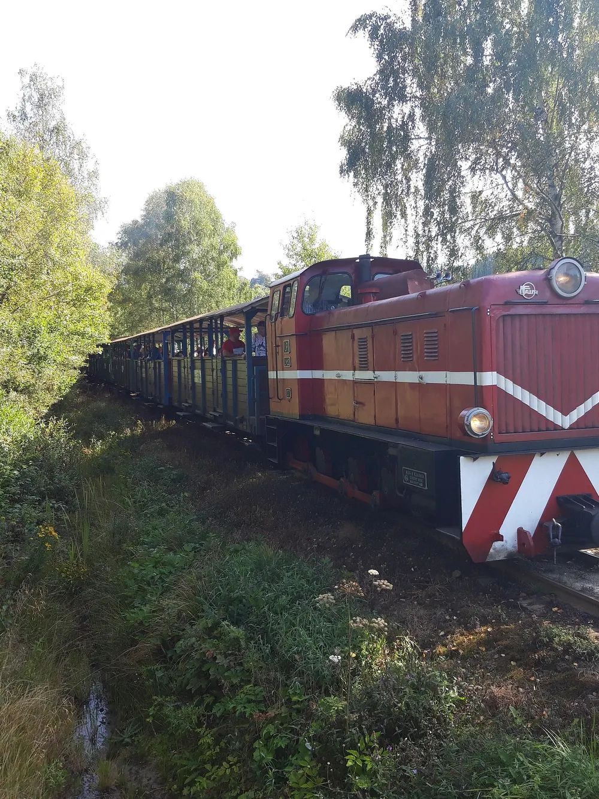
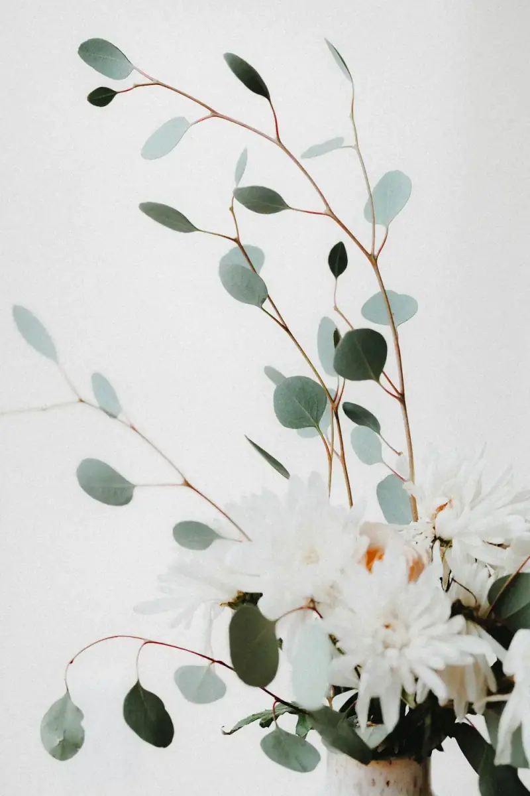
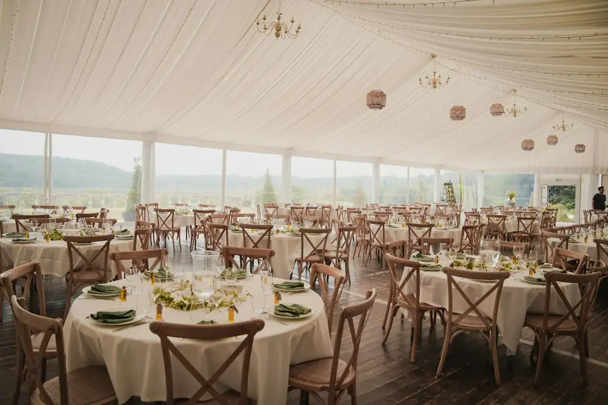

Ona twierdziła, że jesienią nie ma w Polsce piękniejszego miejsca niż Planty, park oplatający krakowskie Stare Miasto. On, który akurat tamtędy przechodził, przyznał jej rację, choć jej nie znał. Skończyli na kolacji przy jednym stole.

Lipiec 2022
Kolejka bez planu
Ich pierwsza dłuższa podróż: leśna kolejka w Bieszczadach, domek bez rezerwacji i tydzień bez patrzenia na zegarek. Wrócili pewni, że z nikim innym nie chcą podróżować.

Marzec 2024
Dom z eukaliptusem
Pierwsze wspólne mieszkanie na Kazimierzu. Pierwszą ozdobą była gałązka eukaliptusa w przedpokoju i od tamtej pory nie zabrakło jej ani jednego tygodnia.
Wrzesień 2025
Oświadczyny
Na Kopcu Kościuszki, nad miastem, bez kamer i publiczności, Jakub zadał pytanie, które ćwiczył od miesięcy. Maria powiedziała „tak”, zanim dokończył zdanie.
Wesele
Dwa miejsca, jedno sobotnie popołudnie. Ceremonia pod lekkimi tkaninami w południowym świetle; przyjęcie wśród lamp i świec, do późna.

Ślub cywilnyOgród Botaniczny
Namiot z lekkich tkanin otwarty na ogród, białe kwiaty i zieleń żywopłotów. Południowe światło przesącza się między fałdami i wszystko zdaje się płynąć wolniej.
Dawna kamienica fabrykanta zamieniona w pałacyk: bardzo wysokie sufity, żyrandole, a gdy zapada wieczór, setki zapalonych świec. Gości witamy chlebem i solą, a obiad i tańce potrwają do białego rana.
Świece, półprzezroczyste tkaniny, lampy i złota godzina: atmosfera, jakiej chcemy na 15 maja.
1 / 10 · przesuń
Informacje dla gości
Jak się poruszać, gdzie spać i co na siebie włożyć. Wszystko, co praktyczne, załatwione z wyprzedzeniem.
Transport
Z Ogrodu do Pałacyku3 km · 10 minut samochodem lub taksówką
Autobus wahadłowyOdjazd sprzed ogrodu o 15:15. Powrót do centrum o 02:30.
TaksówkaPostój przy ul. Kopernika, 200 m od ogrodu. Działają też Bolt, Uber i FreeNow.
Parking Karmelicka250 m pieszo od Pałacyku. Parking przy ul. Kopernika, 300 m od ogrodu.
Dress code: elegancja o zachodzie słońca
Ceremonia odbywa się za dnia, a zabawa kończy się nocą: wybierz tkaniny, które zalśnią w złotym świetle świec. Odcienie écru, blush, szampana, burgundu i brązu oraz jedna celowo dobrana ozdoba.
Écru
Blush
Szampan
Burgund
Brąz
Tkaniny
Jedwab, szyfon, cienki aksamit, len. Faktury, które łapią światło świec, nie błyszcząc zbyt mocno.
Biżuteria
Delikatne złoto, perły lub małe kamienie. Wystarczy jeden wyrazisty element.
Lepiej unikać
Całkowitej bieli (zarezerwowanej dla panny młodej), cekinów, dużych wzorów i dżinsów.
Obuwie
Ceremonia odbywa się na trawie: lepiej wybrać szeroki obcas lub płaską podeszwę.
Noclegi
Hotel Kamienica Aurelia450 m od Pałacyku
450–650 zł / noc
Hotel Zielona Brama1,2 km od Pałacyku
320–450 zł / noc
Apartamenty Podwale2,4 km od Pałacyku
250–380 zł / noc
Ceny orientacyjne za pokój dwuosobowy. Rezerwuj z wyprzedzeniem: w maju w Krakowie jest wielu turystów.
Lista prezentów
Twoja obecność jest dla nas najlepszym prezentem. Jeśli chcesz dołożyć coś od siebie, wolimy wsparcie podróży poślubnej; a jeśli wolisz przedmiot, zebraliśmy kilka rzeczy do domu.
PL00 0000 0000 0000 0000 0000 0000
Przykładowy numer konta (IBAN) — zostanie zastąpiony prawdziwym kontem Młodej Pary. Właściciele rachunku: Maria Kowalczyk i Jakub Wiśniewski.
Fundusz podróży poślubnejDwa tygodnie na Sycylii, w październiku 2027
Zastawa stołowa i szkłoNa stół w nowym domu
Rośliny na tarasLawenda, rozmaryn i oczywiście eukaliptus
Powiedz nam, czy przyjdziesz, z kim i czego potrzebujesz, by czuć się komfortowo. Zajmie to mniej niż minutę.
Termin: 15 marca 2027
Dziękujemy
Najczęstsze pytania
To, o co pytacie najczęściej. Jeśli czegoś brakuje, napiszcie do nas.
Są mile widziane. Będzie menu dla dzieci i strefa zabaw do 20:00; po tej godzinie przyjęcie trwa dalej dla dorosłych. Wskaż w formularzu, ile osób przychodzi z Tobą.
Tak. Napisz w formularzu o każdej alergii, nietolerancji lub diecie (wegetariańskiej, wegańskiej, bezglutenowej…), a kuchnia Pałacyku przygotuje każdy przypadek osobno. Termin jest taki sam jak dla potwierdzenia obecności.
Elegancja o zachodzie słońca: odcienie écru, blush, szampana, burgundu i brązu, płynne tkaniny, takie jak jedwab czy szyfon, i jedna celowo dobrana ozdoba. Unikaj całkowitej bieli, cekinów i dużych wzorów. Pełną paletę znajdziesz w sekcji Informacje dla gości.
Na ceremonię — na parkingu przy ul. Kopernika, 300 m od ogrodu. Na przyjęcie — na parkingu Karmelicka, 250 m od Pałacyku. Jeśli wolisz nie prowadzić, między oboma miejscami kursuje autobus wahadłowy.
Mamy plan B: ceremonia przenosi się do oranżerii w ogrodzie, kilkadziesiąt metrów dalej. Potwierdzimy to wiadomością w przeddzień, przed 18:00. Przyjęcie odbywa się pod dachem.
Obiad zaczyna się o 16:00, a zabawa trwa do 03:00, z otwartym barem od 21:00. Ostatni autobus wahadłowy do centrum odjeżdża o 02:30.
Wolimy ceremonię bez ekranów: nasz fotograf uchwyci wszystko. Gdy tylko się skończy, rób tyle zdjęć, ile chcesz, i udostępniaj je z #MariaIJakub2027.
Tak, przy wejściu do Pałacyku, czynna od 15:30 do 03:00. Do dyspozycji wszystkich są także parasole.
Muzyka
Pomóż nam stworzyć ścieżkę dźwiękową tego popołudnia: dodaj do wspólnej playlisty piosenkę, przy której nie usiedzisz w miejscu.